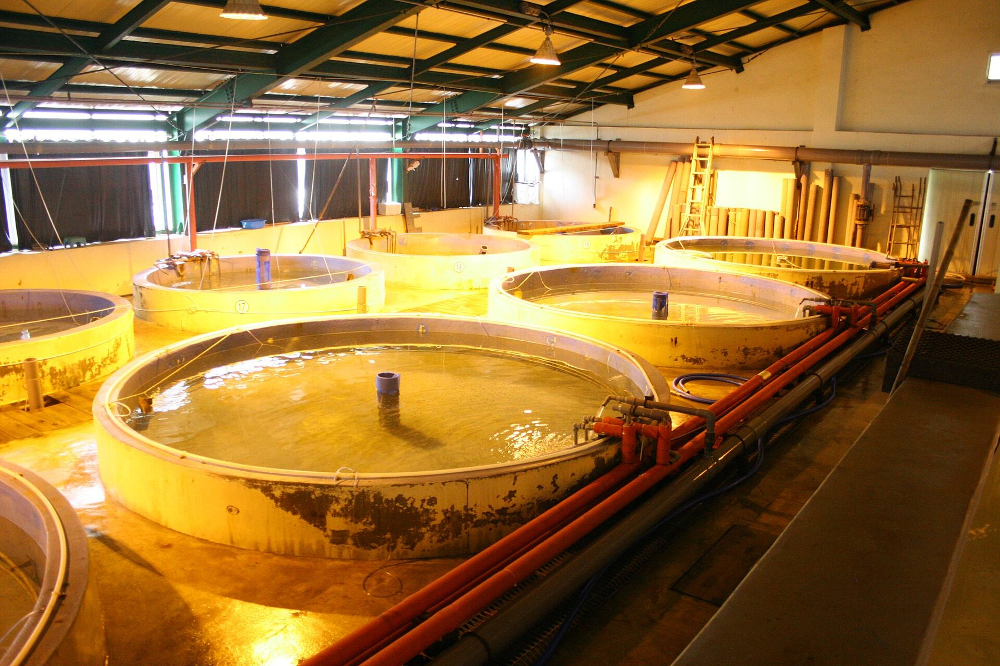

تكون ورشة عرض للاستزراع الدائري أنفع ما تكون حين يصل الزائر ومعه طريقة للنظر. ستكون الأحواض مبهرة أو عادية، وستكون الأنابيب مرتبة أو غير مرتبة، وسيكون للمضيف قصة يرويها. والذي يميّز زيارة ذات قيمة عن جولة مهذّبة هو مجموعة أسئلة يمكن الإجابة عنها على أرض الورشة، ورفض الخلط بين غرفة جيدة الإضاءة وتصميم مثبت لبلد آخر.
هذه المقالة إحاطة عملية للمزارع والباحثين والجهات العامة الذين قد يزورون ورشة نانشا لشركة قوانغتشو نانشا تشي هوي للتكنولوجيا الزراعية المحدودة. وهي مكتوبة حتى تكون جولة أولى أكثر دقة. وهي لا تخترع ضمانات أداء، وتذكّر القارئ بالمقياس التجريبي الذي اعتُمدت عنده الحديقة لتربية الأسماك.
قبل السفر
اكتبوا ما تأملون أن تقرره الزيارة. أتحاولون فهم ممارسة الاستزراع الدائري عامة؟ أتهتمون بمنصة إدارة مصايد الأسماك، أو بمجاهر تشيوهاو، أو بالتناوب مع الأحواض، أو بمياه الصرف؟ يستطيع المضيف أن يُظهر أكثر إذا سُمّي الغرض. وأمنية مبهمة لـ«رؤية التقنية» كثيرًا ما تنتج مشيًا أمام أحواض وحديثًا كان يمكن أن يجري بالبريد الإلكتروني.
اقرأوا الحقائق العلنية عن المقياس قبل أن تهبطوا. لوادي الزراعة في منطقة الخليج استثمار حديقة منشور يبلغ نحو 853 مليون رنمينبي، ومساحة تخطيط للأرض تبلغ نحو 34,104 أمتار مربعة. ويصف الاعتماد البيئي الصادر في 2 شباط/فبراير 2026 حجم تربية تجريبي سنوي مصمَّم يبلغ نحو 50 طنًا. ولا يجوز دمج هذه الأرقام. أنتم تزورون بيئة عرض وتجريب، وحديقة تتضمن أيضًا مباني بحث وثقافة ما تزال تُبنى. ولستم تدخلون مصنعًا تجاريًا بعدة آلاف من الأطنان، وينبغي ألا تطلبوا من العاملين أن يتظاهروا بخلاف ذلك.
أعدّوا ملفًا قصيرًا عن موقعكم أنتم: المناخ، ومصدر الماء، والنوع، والكثافة المقصودة، وسعر الطاقة، والعمل، والترخيص الذي ستحتاجونه للصرف. والحديث المفيد يقارن مكانين حقيقيين. وهو لا يطلب من تقني في نانشا أن يصمم مزرعتكم في بعد ظهر واحد من دون تلك الحقائق. وإذا لم تُنشر بعد هواتف وبريد إلكتروني رسمية للشركة، فاستخدموا نموذج طلب الزيارة في هذا الموقع لإعداد رسالة يمكنكم حملها، وانتظروا بيانات اتصال مؤكَّدة أو سلّموا الطلب في العنوان المذكور في صفحة الاتصال.
فكّروا في اللغة والوقت. فالزيارة الجادة تحتاج ساعات، لا عشرين دقيقة، وتحتاج سبيلًا لطرح أسئلة تقنية بدقة. وإذا كنتم ستحتاجون إلى مترجم، فقولوا ذلك مقدمًا. وإذا كان في جانبكم من يفهم المضخات أو كيمياء الماء أو صحة الأسماك، فأحضروا واحدًا منهم. وزيارة مكوّنة من مديرين كبار فقط، بلا أحد يستطيع النظر إلى مرشّح، أيسر إبهارًا وأصعب تعلمًا منها.
الجولة الأولى: الأحواض والتدفّق والنظام اليومي
ابدأوا بمسار الماء، لا بأسماء العلامات التجارية على الآلات. أين يغادر الماء الحوض؟ أين تُخرج المواد الصلبة؟ أين المرشّح البيولوجي، وكيف يمكن أن تروا أنه يعمل — منفذ رؤية، أو نقطة عيّنة، أو مجموعة قراءات؟ أين يُضاف الأكسجين، وأين يُسمح لثاني أكسيد الكربون بالمغادرة؟ إذا لم يستطع المضيف أن يمشيكم حول الحلقة بالترتيب، فذلك معلومات أصلًا.
وانظروا إلى النظام اليومي بالاهتمام نفسه الذي تولونه العتاد. أالممرات خالية؟ أالأسماك النافقة غائبة عن الأحواض؟ أالشبكات معلّقة حيث ينبغي، أم ملقاة في برك؟ أالحمأة في وعاء معرَّف، أم في ركن؟ فنظام الاستزراع الدائري لا يسامح الإهمال، وينبغي لورشة عرض أن تكون مستعدة لإظهار حالة عمل عادية، لا واجهة معدّة فحسب. ومن الإنصاف أن تسألوا إن كان ما ترونه نموذجيًا ليوم ثلاثاء بلا ضيوف.
وانظروا إلى السمك، لا إلى العمارة فحسب. أهي تتنفّس بجهد، أو تومض، أو تتزاحم عند مدخل؟ أالعلف متروك على السطح طويلًا بعد وجبة؟ وزائر لا ينظر أبدًا إلى داخل الحوض سيتذكر الغرفة ويُفوّت الحيوانات. وإذا دُعيتم إلى الاقتراب، فاتبعوا قواعد الأمن الحيوي: الأحذية واليدان، ورفض غمس شبكة غير مأذون بها.
واسألوا كيف تعمل التنبيهات. من يُستدعى ليلًا إذا انخفض الأكسجين؟ كم يمكن للنظام أن يعمل على طاقة احتياط؟ متى كان آخر طارئ حقيقي، وماذا نُتِج عنه من تعلم؟ وورشة لم تواجه مشكلة أبدًا إما جديدة جدًا، أو محظوظة جدًا، أو لا تروي القصة كلها. وورشة تستطيع أن تسرد مشكلة وتصحيحًا تكون عادة المعلّم أوثق.

جودة المياه والسجلات والمنصة
اطلبوا رؤية أرقام الأمس، لا أرقام اليوم فحسب. وينبغي أن توجد الأمونيا والنيتريت والأكسجين الذائب ودرجة الحرارة والرقم الهيدروجيني في سلسلة. وورقة مطبوعة واحدة معدّة للزوّار دليل أضعف من سجل يتضمن يومًا محرجًا وملاحظة عما فُعل. وإذا كانت منصة لإدارة مصايد الأسماك قيد الاستعمال، فاسألوا من يُدخل البيانات، ومن يتلقى التنبيهات، وأي القراءات ما تزال تُؤخذ يدويًا فحصًا على المجسّات. وتسمّي الأوصاف العلنية لمنصة نانشا الرصد وسجلات الإنتاج والتحكّم في المعدات والتنبيهات والتحليل. والزيارة هي الموضع لرؤية كيف تبدو تلك الكلمات في الممارسة.
والمعايرة سؤال مفيد، محرج قليلًا. متى عويرت مجسّات الأكسجين آخر مرة؟ ماذا يحدث حين يختلف مجسّ عن عدّاد يدوي؟ والفريق الذي يرحّب بالسؤال عادة فريق يحاجّ أدواته أصلًا، وتلك عادة صحيحة. أما الفريق الذي يغضب فقد يكون أشد تعلّقًا بالشاشة.
وإذا كانت الورشة استزراعًا سمكيًا نباتيًا، فامشوا جانب النبات بعناية جانب السمك نفسها. واسألوا كيف يرتبط حصاد النباتات بتغذية الأسماك، وماذا يحدث لفضلات النبات، وكيف يُحفظ الرقم الهيدروجيني في نطاق يطيقه الطرفان. والمخطط التفسيري مفيد. أما قصة موزونة عن أسبوع حقيقي فخير.
الصحة والفحص المجهري والأمن الحيوي
اسألوا كيف تُلاحظ الأسماك المريضة وماذا يحدث بعد ذلك. أهناك مجهر في الموقع، وهل يجوز أن تروا كيف تُحضَّر شريحة؟ إذا كانت أجهزة تشيوهاو جزءًا من سبب زيارتكم، فقولوا ذلك، واطلبوا عرضًا يتضمن عيّنة حقيقية وصورة مخزَّنة ونقاشًا صريحًا لأرقام التعرّف المذكورة من الشركة — موسومة بأنها مذكورة من الشركة، لا نتائج معتمدة استقلالًا. واسألوا ما الذي سيُطلب لتجريب سير العمل على طفيليات تهم في بلدكم.
وينبغي أن يكون الأمن الحيوي ظاهرًا في أشياء صغيرة: مسار للزوّار، وقاعدة عن الطعام والسجائر، وخيار حجر صحي أو عزل، وعاملون يستطيعون شرح كيف يُعامل المخزون الداخل. وقاعة استزراع دائري ليست مؤمَّنة حيويًا تلقائيًا. والزيارة فرصة لرؤية إن كانت الكلمة ممارسة أو ملصقًا.
المقياس والطاقة وبقية الحديقة
أبقوا التصميم التجريبي بطاقة 50 طنًا في الذهن حين تسألون عن الإنتاج. وأسئلة تحويل العلف والبقاء واستخدام الطاقة منصفة إن صيغت ممارسة في هذه الورشة، لا ضمانات لمنشأة لم تصمموها بعد. واسألوا كم من الكهرباء تستخدم الحلقة في أسبوع حار، وما هي التعرفة، وما تكلفة إبقاء ترتيب الاحتياط جاهزًا. والطاقة كثيرًا ما تكون المفاجأة الهادئة لمشتري RAS لأول مرة، ولا سيما في مناطق حارة شحيحة الماء حيث يعمل التبريد والتهوية بشدة.
واسألوا أيضًا عن بقية الحديقة. فمباني البحث والثقافة في المرحلة الثانية، وترخيص تخطيط صدر في كانون الأول/ديسمبر 2025 للمبنى 3، ومناقصة إعادة تدوير لمياه الصرف من شباط/فبراير 2025، كلها حقائق علنية. وهي تعينكم على فهم أنكم في حديقة ما تزال تُبنى، لا في صالة عرض تصدير مكتملة. وإذا مورس التناوب مع الأحواض، فاطلبوا أن تسمعوا كيف يُوقَّت النقل وكيف يُفكَّر في مياه الصرف من المرحلتين، ولا تفترضوا أن كل حوض ترونه من طريق في نانشا يخص الشركة.

كيف تُختَم الزيارة من دون يقين زائف
قبل أن تغادروا، اكتبوا ما أُظهر، وما وُصف فقط، وما ما يزال غير واضح. وسجّلوا أسماء من تحدثتم إليهم، والأسئلة التي لم يستطيعوا الإجابة عنها بعد — بما في ذلك قنوات الاتصال الرسمية إن كانت ما تزال بانتظار التأكيد. والزيارة الجيدة تنتج قائمة عمل متابعة، لا قرارًا مفاجئًا بنسخ الغرفة.
ولا تغادروا ومعكم علامة CE لم تُعرض، أو مرجع في الخارج لم يُوثَّق، أو إحساس بأن رقم استثمار الحديقة طاقة إنتاج. بل غادروا بصورة أوضح لممارسة RAS اليومية، وللمنصة والأجهزة كما تُستخدم فعلًا، ولما إن كان حديث تقني لاحق يستحق أن يُجرى. وتلك زيارة أولى ناجحة: ليست صفقة مكتملة، وليست جولة مخيّبة، بل نظرة أدق إلى ورشة يمكن المشي فيها على مقياس تجريبي.
والمقالات عن جودة المياه، والصحة والفحص المجهري، ومياه الصرف، والطاقة وتكاليف التشغيل، والأسئلة الأولى لمشتري الخليج أو جنوب شرق آسيا، مقصود منها أن تقع إلى جانب هذه المقالة. فاقرأوها إن شئتم، ثم تعالوا، إن استطعتم، واختبروا الأسئلة على أرض الورشة.
الناس والترجمة وما يجوز تصويره
الورشة موضع عمل قبل أن تكون موضع عرض. وقد يكون العاملون مشغولين بتغذية، أو بتنظيف مرشّح، أو بمهمة مختبرية لا تنتظر جدول زيارة. والمجاملة جزء من الجدّية التقنية: صلوا في الوقت، والزموا المسار المتفق عليه، ولا توجّهوا تعليمات إلى تقنيين ليسوا لكم. وإذا رغبتم في التصوير، فاسألوا أولًا. وقد تكون بعض الغرف، وبعض شاشات الحاسوب، محظورة لأسباب وجيهة من السلامة أو الخصوصية أو عمل غير مكتمل. وما تزال الصور الرسمية لمنشآت الشركة نفسها تُعدّ لهذا الموقع العلني؛ وينبغي ألا يفترض الزائر أن كل صورة تُلتقط في ذلك اليوم يمكن نشرها.
واللغة ستشكّل ما تتعلمونه. فالصينية التقنية، والإنجليزية التقنية، والعربية التقنية لا تشترك دائمًا في كلمة للمرشّح نفسه أو للقراءة نفسها. وإذا اعتمدتم على مترجم، فأحِيطوه علمًا بالأمونيا والنيتريت والأكسجين الذائب، وبالفرق بين صاحبة مشروع وبائع معدات، حتى لا تُسطَّح تلك الأفكار في كلمة واحدة هي «آلة». وقائمة أسئلة مطبوعة بأكثر من لغة يمكن أن تنقذ زيارة من أن تصير انطباعًا مبهمًا.
خذوا ملاحظات في الغرفة، وميّزوا بوضوح ما رأيتموه بأعينكم، وما قيل لكم، وما استنتجتموه فقط. فالذاكرة تجامل الأنابيب المرتبة وتنسى سجل احتياط مفقودًا. وإذا حضر عضوان من فريقكم، فقارنوا الملاحظات في المساء نفسه. والخلاف بينكم مفيد؛ وهو عادة يشير إلى شيء لم يُشرح تمامًا.
مقارنة ما ترونه بما تحتاجونه
بعد الجولة، اجلسوا — حتى في المطار — وقارنوا الورشة بقيودكم أنتم، نقطة فنقطة. المناخ: أيمكن لخطة الحرارة هذه أن تسافر؟ الماء: أمصدركم أعسر أو أملح أو أقل موثوقية مما تتمتع به هذه الحلقة؟ النوع: أننظرون إلى سمكة يعمل معها هذا الفريق فعلًا، أم إلى جارة لتلك السمكة؟ العمل: ألديكم، أو يمكنكم تدريب، أناس يستطيعون فعل ما شاهدتموه للتو؟ الطاقة: أسألتم أصلًا عن حديث صريح عن الكيلوواط-ساعة، أم تخطيتموه لأن الأحواض كانت شيّقة؟ الصرف: أتعرفون أين ستذهب حمأتكم؟
إذا كانت إجابات عدة «ما نزال لا نعرف»، فإن الزيارة قد أدت جزءًا من عملها: لقد سمّت الثغرات. ويمكن عندئذ طلب حديث ثانٍ أكثر تركيزًا، ربما مع أخصائي جودة مياه أو شخص يعمل على المنصة أو المجاهر، لا تكرار الجولة العامة نفسها. وإذا كانت بيانات الاتصال الرسمية ما تزال موسومة بـ«يُؤكَّد لاحقًا»، فاحتفظوا بخلاصتكم المكتوبة حتى تُنشر، كما ينصح نموذج الاتصال في هذا الموقع أصلًا.
ومن الإنصاف أيضًا أن تقرروا، بعد زيارة، أن ورشة العرض هذه ليست الشريك المناسب أو ليست اللحظة المناسبة. فورشة على مقياس تجريبي، في حديقة ما تزال تضيف مباني بحث، قد تكون مكانًا ممتازًا للتعلم ومكانًا رديئًا لتوقّع منشأة تصدير مكتملة المواصفات. ويمكن أن تصح الخلاصتان معًا. والمغادرة بهذا الوضوح نتيجة أفضل من المغادرة بقصة منتفخة تُروى في الوطن.
قائمة تحقق قصيرة يمكنكم طبعها
الحلقة، بالترتيب، مع مخططكم أنتم. أرقام جودة مياه الأمس، بما في ذلك يوم محرج إن أمكن إظهاره. معايرة المجسّات وفحص بعدّاد يدوي. مسار التنبيه وطاقة الاحتياط، مع تاريخ آخر اختبار إن وُجد. طريقة العلف والحبيبات المتبقية. سلوك السمك في أكثر من حوض. الروتين الصحي، وإن لزم، عرض مجهر لا يبالغ في الادعاء. قواعد المخزون الداخل والزوّار. الحمأة ومياه الصرف، حتى إن كانت منشأة الحديقة ما تزال قيد الإنشاء. التناوب مع الأحواض، إن كان جزءًا من اهتمامكم، مع تحذير من افتراض أن كل حوض محلي يخص الشركة. الناس الذين قابلتموهم، والأسئلة التي ما تزال مفتوحة، ورفض حمل شهادة أو مرجع في الخارج لم يُعرض فعلًا.
إذا مررتم بهذه القائمة، تكونون قد استخدمتم زيارة عرض كما ينبغي أن تُستخدم: نظرًا إلى الممارسة، على مقياس تجريبي، في مكان حقيقي. أما بقية القرار — أمضي أبعد، وعلى أي شروط — فيمكن عندئذ اتخاذها من دون الضباب الذي تتركه جولة احتفالية خالصة.